문장 안에서 보는 뜻
出す의 꺼내다 / 제출하다 / 편지를 보내다에 맞춰 LLM으로 예문과 한국어 번역을 만들었습니다. 별도 LLM 판정과 규칙 검증을 통과한 결과만 수록했습니다.
5,800개 선별 어휘에, 근거가 확인된 경우 예문·활용·용법·단어 구성·관련어·한자 정보를 더하고, 7,850개 실전 문제까지 연결했습니다.
N5–N1 · 노트 15,996개 · 카드 21,897개 · 한국어권 학습자용
Anki가 처음이라면 설치부터
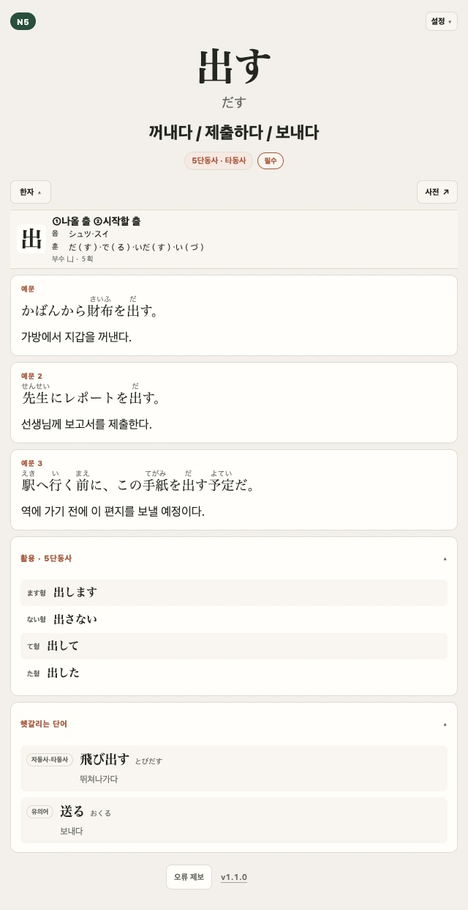
단어의 읽기와 뜻만 보여주는 카드에 예문과 활용, 관련어와 한자 정보까지 더했습니다.
出す의 꺼내다 / 제출하다 / 편지를 보내다에 맞춰 LLM으로 예문과 한국어 번역을 만들었습니다. 별도 LLM 판정과 규칙 검증을 통과한 결과만 수록했습니다.
AivisSpeech 1.2.0의 まい(마이) 모델로 만든 합성 음성을 모든 5,800개 단어와 6,305개 검토 예문에 담았습니다. 단어와 예문을 눌러 바로 듣고, 음성만 듣는 복습 카드로도 반복합니다.
出します · 出さない · 出して · 出した를 카드 안에서 확인합니다.
飛び出す(뛰쳐나가다) · 送る(보내다)처럼 함께 구분해야 할 관련 어휘를 뜻과 함께 보여줍니다.
단어를 이루는 한자를 글자별로 풀어 한국어 학습 뜻과 읽기, 부수·획수를 확인합니다. 별도 한자 덱은 『일본어 상용한자 무작정 따라하기』(일상무따) 1·2권 구성을 따라 2,337개 노트로 만들었고, 연결되는 선별 어휘를 읽기·뜻·음성과 함께 이어서 익힙니다.
아래 이미지는 카드 기능을 설명하기 위한 고정 샘플 렌더입니다.현재 빌드의 개별 뜻·예문 수·학습 우선순위는 샘플과 달라질 수 있습니다.
핵심 표현을 비슷한 말과 함께 비교해, 뜻만으로 놓치기 쉬운 쓰임 차이를 구분합니다.
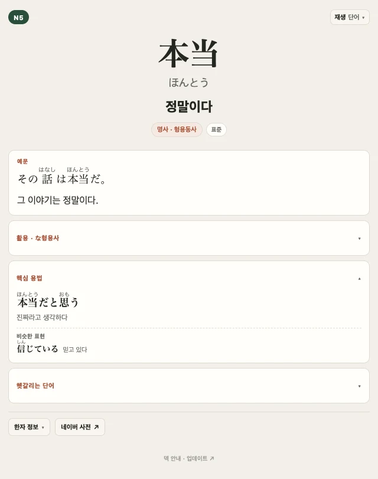
단어를 구성 요소로 나눠, 각 요소가 전체 뜻으로 이어지는 방식을 익힙니다.
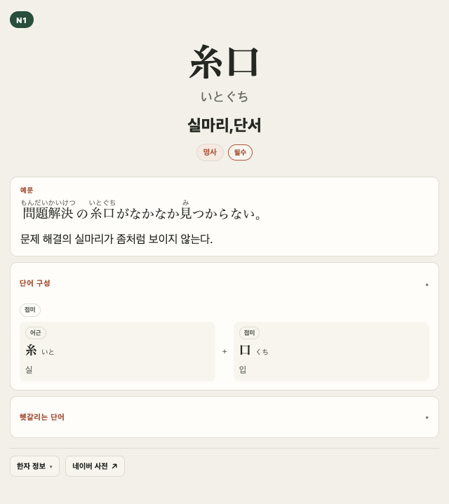
구어뿐 아니라 존경어·겸양어·정중어, 격식·문어·친근어·속어·방언, 의학·스포츠·컴퓨터 같은 전문 분야까지 표시합니다. 특정 뜻에만 해당하면 ‘일부 뜻’도 함께 구분합니다.
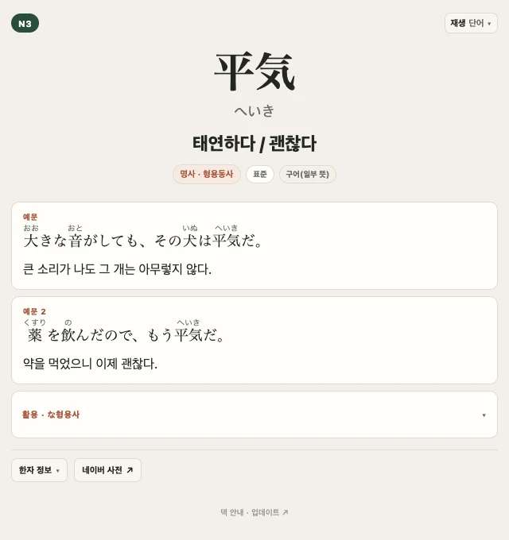
단어 음성과 예문부터 활용, 관련·혼동 어휘, 단어 구성, 문체·사용역, 핵심 용법과 한자 노트까지 실제 수록 현황입니다.
『일본어 상용한자 무작정 따라하기』 1·2권 구성을 따라 한자의 뜻과 읽기, 부수·획수를 익히고, 연결되는 선별 어휘까지 한 카드에서 확인합니다.
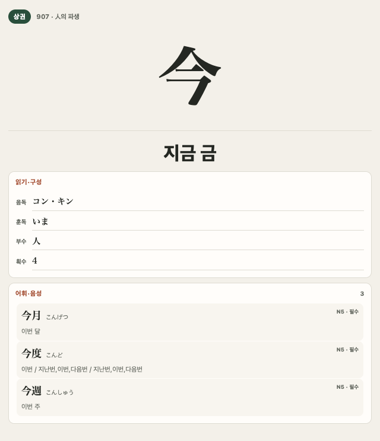
今을 ‘지금 금’으로 익히고 음독 コン·キン, 훈독 いま를 함께 봅니다.
글자 형태를 익힐 때 필요한 부수와 획수를 답안면에 함께 정리했습니다.
今月 · 今度 · 今週처럼 덱에 있는 선별 어휘를 읽기·뜻·급수와 함께 이어서 복습하고, 단어를 눌러 음성도 들을 수 있습니다.
출판사의 JLPT 학습용 어휘에서 시작해, 단어 카드에 맞지 않는 항목을 한 번 더 걸러냈습니다.
복수 JLPT 출판사의 N1~N5 어휘 자료를 후보군으로 삼습니다. 웹에서 빈도나 출처를 알 수 없는 단어를 무작위로 모으지 않았습니다.
문장형·활용형·비표준 중복처럼 단어 카드에 부적합할 수 있는 후보를 LLM 기반으로 추가 검토해 제외했습니다. 의미 충돌은 별도 의미 해소 절차와 독립 판정으로 재확인하고, 같은 기반 어휘의 가나·한자 표기만 통합했습니다. 한자가 다른 어휘는 기본적으로 분리하며, 사용자 빌드 중에는 LLM을 호출하지 않습니다.
Anki 태그로 출판사 공통 어휘부터 시작하거나, 급수와 우선순위에 맞춰 학습량을 조절할 수 있습니다.
priority::02_standardjlpt::N2JLPT 어휘 문제는 한자 읽기·표기·단어 형성·문맥 규정·바꿔쓰기(유의 표현)·용법으로 나뉩니다. 출판사 교재가 지정한 유형과 뜻을 근거로 LLM을 활용해, 그 단어가 나올 가능성이 높은 JLPT 형식의 문제를 만들었습니다. 생성안은 별도 LLM 판정과 규칙 검증을 거쳤고, 통과하지 못한 항목은 검토 후 교체했습니다.
밑줄 친 한자의 올바른 읽기를 고릅니다.
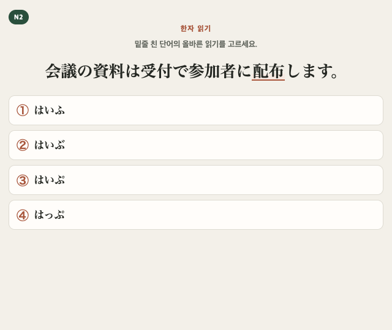
会議の資料は受付で参加者に配布します。
밑줄 친 配布의 올바른 읽기를 고르세요.
밑줄 친 말을 올바른 한자로 고릅니다.
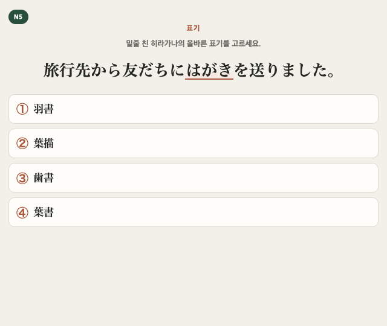
旅行先から友だちにはがきを送りました。
밑줄 친 히라가나 はがき의 올바른 표기를 고르세요.
앞뒤 요소를 결합해 알맞은 단어를 만듭니다.
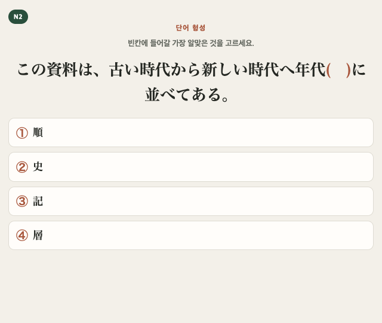
この資料は、古い時代から新しい時代へ年代（ ）に並べてある。
年代 뒤 빈칸에 들어갈 가장 알맞은 말을 고르세요.
문장 흐름에 가장 자연스러운 단어를 고릅니다.
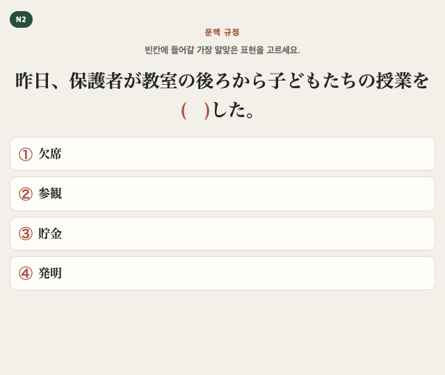
昨日、保護者が教室の後ろから子どもたちの授業を（ ）した。
빈칸에 들어갈 가장 알맞은 표현을 고르세요.
밑줄 친 표현과 가장 가까운 뜻을 고릅니다.
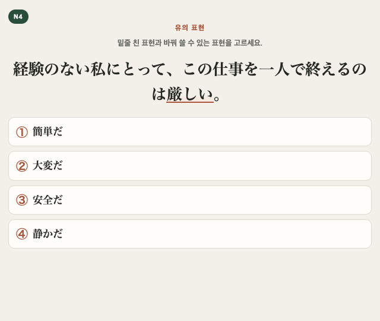
経験のない私にとって、この仕事を一人で終えるのは厳しい。
밑줄 친 표현 厳しい와 바꿔 쓸 수 있는 표현을 고르세요.
제시된 단어의 쓰임이 올바른 문장을 고릅니다.
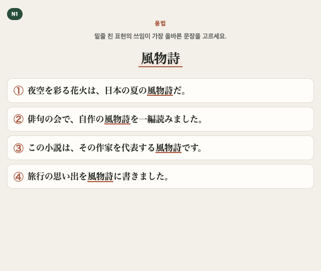
밑줄 친 표현 風物詩의 쓰임이 가장 올바른 문장을 고르세요.
좌우로 스크롤하거나 이동 버튼으로 유형을 바꿉니다. 키보드에서는 캐러셀에 초점을 둔 뒤 왼쪽·오른쪽 화살표 키를 누르고, 각 카드의 버튼으로 문제와 답안면을 바꿀 수 있습니다.
문제를 먼저 풀고, 카드를 뒤집어 정답·후리가나·번역과 음성을 확인합니다. JLPT 6개 공식 어휘 유형에는 선택지별 해설도 제공합니다.
여기에 N5 수량 표현·날짜·월·요일 읽기 215개를 더했습니다.
수량 표현과 달력처럼 묶어서 볼수록 규칙과 예외가 잘 보이는 항목은 9개의 참조표 카드로 따로 정리했습니다.
규칙에서 벗어나는 읽기까지 한눈에 비교합니다.
월 12개, 요일 7개, 날짜 31개를 한 화면에 모았습니다. 항목을 누르면 읽기도 들을 수 있습니다.
자주 쓰는 단위를 나눠 예외적인 소리 변화까지 빠르게 비교합니다.
필요할 때 참조표도 같은 Anki 패키지 안에서 바로 확인할 수 있습니다.
語彙
5,800예문과 학습 정보를 필요에 따라 붙인 어휘 노트.
実戦
7,850답을 먼저 떠올리고, 유형에 따라 해설로 확인하는 문제 카드.
漢字
2,337일상무따 1·2권 구성의 한자 정보와, 연결되는 경우 선별 어휘를 함께 보여주는 한자 학습.
参照
9필요할 때 덱 안에서 바로 여는 핵심 표.
완성 APKG에는 출판사 교재에서 가져온 한국어 뜻 같은 파생 내용이 들어갈 수 있습니다. 그래서 공개 bundle에는 출판사 PDF·원문 데이터셋·완성 APKG를 넣지 않습니다.
빌더 코드와 공개 가능한 덱 구성 데이터·음성만 제공합니다.
필요한 PDF 17개를 각 출판사의 공식 경로에서 직접 내려받아 다른 PDF가 없는 전용 폴더에 모읍니다.
빌더가 사용자 컴퓨터에서 필요한 정보를 결합해 개인 학습용 APKG를 만듭니다. 완성 파일은 공유하지 않습니다.
아래 자료는 공개 릴리스에 들어 있지 않습니다. 각 출판사의 공식 페이지에서 직접 내려받아 다른 PDF가 없는 전용 폴더에 모으세요.
표가 화면보다 넓으면 표에 초점을 둔 뒤 왼쪽·오른쪽 화살표 키로 이동할 수 있습니다. 표 안의 공식 자료 링크는 Tab 키로 이동합니다.
일부 자료는 로그인 또는 구매 도서 인증 후 내려받을 수 있습니다. 빌더가 이 PDF를 대신 내려받지는 않습니다.
자료 준비 방법 보기컴퓨터가 익숙하지 않아도 괜찮습니다. Mac이나 Windows에서 열면 해당 운영체제 탭이 자동으로 선택됩니다. 노란 버튼으로 명령을 복사해 한 번 붙여 넣으면, 필요한 준비와 덱 만들기를 나머지는 자동으로 진행합니다.
시작하기 전에: 필요한 PDF 17개를 새 폴더 하나에 모아 주세요. 파일 이름은 바꾸지 않아도 됩니다. 빌더가 정확히 확인할 수 있도록 다른 PDF는 이 폴더에서 잠시 빼 주세요. 처음 만들 때는 인터넷 연결과 여유 저장 공간도 필요합니다.
해커스 10개 · 동양북스 5개 · 길벗 2개입니다. 위의 공식 자료 링크에서 받은 파일만 한 폴더에 넣어 주세요.
Mac이나 Windows에서는 해당 탭이 자동으로 열립니다. 휴대폰에서 보고 있다면 나중에 빌드할 컴퓨터에서 이 페이지를 다시 여세요. 노란 버튼은 시작 스크립트를 안전하게 내려받아 실행하는 명령을 복사합니다.
필요한 프로그램 설치, 파일 다운로드, 손상 여부 확인, 덱 만들기를 자동으로 진행합니다. 완성되면 Anki에서 바로 가져올 수 있는 .apkg 파일이 든 폴더가 열립니다.
결과 폴더의 JLPT-MAX덱-1.0.0.apkg만 선택하면 됩니다. 메뉴 위치와 첫 학습까지 자세히 보기
터미널 여는 법: ⌘ Command + Space를 누르고 ‘터미널’을 검색해 여세요. 노란 버튼으로 복사한 명령을 붙여 넣고 Enter를 누르면 됩니다.
(set -o pipefail; curl -fsSL 'https://github.com/OWNER/REPOSITORY/raw/refs/heads/main/scripts/bootstrap-public.sh' | bash -s -- 'https://github.com/OWNER/REPOSITORY')PowerShell 여는 법: 시작 메뉴를 열고 ‘PowerShell’을 검색해 여세요. 노란 버튼으로 복사한 명령을 붙여 넣고 Enter를 누르면 됩니다.
& ([scriptblock]::Create((irm 'https://github.com/OWNER/REPOSITORY/raw/refs/heads/main/scripts/bootstrap-public.ps1'))) -RepositoryUrl 'https://github.com/OWNER/REPOSITORY'복사되는 것은 한 줄뿐입니다. 이 명령은 공개된 시작 스크립트를 내려받아 바로 실행합니다. PDF 확인, 필요한 프로그램과 릴리스 다운로드, 파일 검증과 덱 빌드는 시작 스크립트 안에서 처리합니다. 실행 전에 내용을 확인하려면 위의 ‘무엇이 실행되는지 보기’를 누르세요.
지금은 준비 중입니다: 아직 GitHub remote와 Release를 연결하지 않아, 현재 소스의 버튼은 실제 다운로드까지 끝나지 않습니다. Pages를 배포하면 저장소 주소를 자동으로 넣고, 첫 Release 방식이 정해지면 다운로드 주소도 확정할 예정입니다. Mac에서는 현재 릴리스 후보로 전체 덱이 만들어지는 것을 확인했으며, Windows 실제 컴퓨터에서의 최종 확인은 남아 있습니다.
여러 리포트 중 Anki에 넣는 파일은 JLPT-MAX덱-1.0.0.apkg 하나입니다. Windows·macOS·iPhone/iPad·Android 중 공부할 기기에 맞춰 설치와 가져오기를 이어서 보세요.
아래 내용은 실무적인 요약이며, 정확한 조건은 LICENSE와 NOTICE가 우선합니다.
빌더 코드는 AGPL-3.0-or-later입니다. 코드 개선은 라이선스 조건에 따라 공유할 수 있습니다.
코드 공개생성 콘텐츠·음성·KANJIDIC2에는 NOTICE에 적힌 각 자료의 라이선스와 이용 조건이 적용됩니다.
자료별 조건 적용출판사 자료의 권리는 각 권리자에게 남습니다. 이 빌더로 PDF의 파생 내용을 담아 만든 APKG는 개인 학습용으로만 보관합니다.
개인 학습용공개 bundle에는 출판사 PDF, 대량 추출 원문, PDF 페이지 이미지와 완성 APKG를 넣지 않습니다. 프로젝트 사이트의 고정 카드 화면·음성은 기능 설명용 샘플입니다.
여기서 파생 내용은 교재 PDF에서 복원해 카드에 넣은 한국어 뜻 같은 필드를 말합니다. 카드 형식으로 가공해도 출판사 자료의 권리가 프로젝트로 넘어오는 것은 아니며, 빌더의 AGPL 라이선스도 그 내용을 포함한 APKG의 재배포 권한까지 주지는 않습니다. 프로젝트는 해당 내용을 완성 덱으로 다시 배포할 권한을 확보하지 않았기 때문에, 공개 릴리스에는 빌더와 공개 가능한 자료만 넣고 완성 APKG는 각 사용자가 정식으로 구한 PDF로 직접 만들도록 합니다.
출판사 PDF 자체는 프로젝트가 배포할 수 있는 자료에 포함되지 않습니다. 각 출판사의 정식 경로에서 필요한 판본을 내려받아 다른 PDF가 없는 전용 폴더에 모으면, 빌더가 해당 파일에서 필요한 필드만 사용자 컴퓨터에서 복원해 APKG를 만듭니다. 로그인·구매 인증을 대신하거나 PDF를 대신 내려받지는 않습니다.
해커스 N1~N5 어휘 자료 10개, 동양북스 『일단 합격 JLPT 완벽 대비』 N1~N5 단어장 5개, 길벗 『일본어 상용한자 무작정 따라하기』 1·2권 소책자 2개로 총 17개입니다. 위 링크에서 해당 교재와 자료실을 찾은 뒤, 빌더의 SHA-256·파일 크기·페이지 수 검증으로 지원 판본인지 확인합니다. 파일명과 하위 폴더는 바꿔도 되지만 PDF를 다시 저장·병합·최적화하면 인식되지 않을 수 있습니다. 출판사가 새 판본으로 교체했다면 파일을 변조하지 말고 새 릴리스를 기다리세요.
프로젝트의 NOTICE가 명시적으로 허용하는 범위는 사용자가 직접 만든 APKG의 개인 학습입니다. APKG를 업로드·판매·미러링하거나 다른 사람에게 전달하는 범위는 포함되지 않습니다. 함께 쓰고 싶다면 완성 덱 대신 이 저장소와 공식 자료 취득 방법을 알려 주고, 각자가 PDF를 정식으로 구해 직접 빌드하게 해주세요.
아닙니다. 예문·번역은 LLM으로 미리 생성했고, JLPT 6개 공식 어휘 유형의 문제는 LLM 생성안을 검증·교체해 확정했습니다. N5 수량·달력 읽기 215개는 표에서 규칙으로 만들었습니다. 사용자의 빌드 과정에서는 LLM이나 외부 생성 API를 호출하지 않습니다.
먼저 Anki 설치 가이드에서 Windows·macOS용 Anki Desktop, iPhone/iPad용 공식 AnkiMobile, Android용 호환 오픈소스 앱 AnkiDroid 중 공부할 기기의 앱을 설치하세요. 그다음 덱 만들기·가져오기 가이드를 따라 PDF 준비, 빌드와 기기별 APKG 직접 가져오기를 순서대로 진행하면 됩니다. AnkiWeb 웹사이트에서는 APKG를 직접 가져올 수 없습니다.
네. 무료 AnkiWeb 계정을 만들고 각 기기에서 같은 계정으로 로그인한 뒤 동기화하면 복습 기록과 학습 상태를 이어갈 수 있습니다. 미디어 17,511개의 첫 동기화는 오래 걸릴 수 있으므로, 당장 공부할 기기에는 APKG를 직접 가져와 먼저 시작하는 편이 빠릅니다. 첫 연결 방법은 AnkiWeb 동기화 안내를 확인하세요.